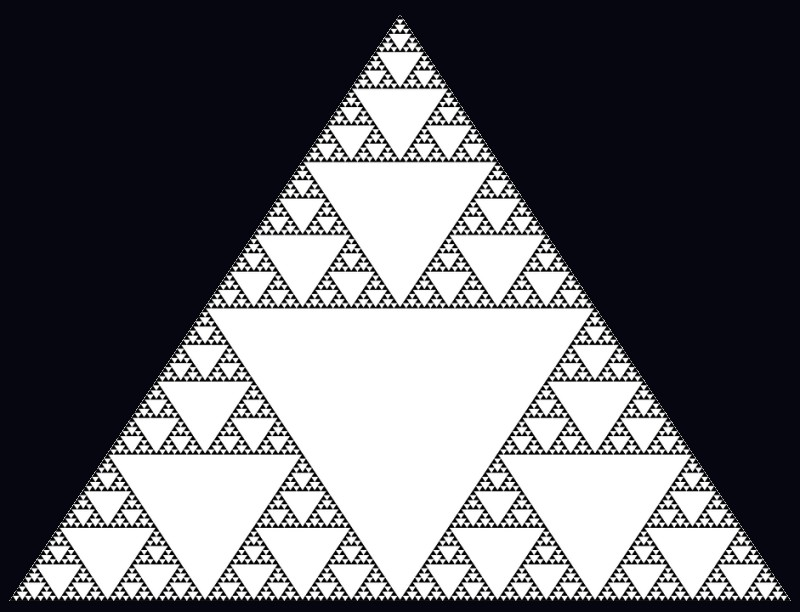
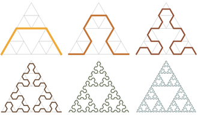

Trójkąt Sierpińskiego (znany też jako uszczelka Sierpińskiego) - jeden z najprostszych fraktali. Znany był na długo przed powstaniem tego pojęcia. Konstrukcja tego zbioru została podana przez polskiego matematyka Wacława Sierpińskiego w 1915 roku.
Trójkąt Sierpińskiego otrzymuje się następująco: w trójkącie równobocznym łączy się środki boków, dzieląc go w ten sposób na cztery mniejsze trójkąty. Trójkąt środkowy usuwa się (bez boków), a wobec trzech pozostałych trójkątów operację się powtarza, dzieląc każdy z nich na cztery mniejsze trójkąty, usuwając środkowy (bez boków), a wobec pozostałych trójkątów czynności się powtarzają. Po każdym powtórzeniu tej operacji z figury zostają usunięte pewne punkty. Punkty, które nie zostaną usunięte, tworzą trójkąt Sierpińskiego. Podobny proces możemy powtórzyć i dla kwardatów.
Trójkąt Sierpińskiego otrzymuje się następująco: w trójkącie równobocznym łączy się środki boków, dzieląc go w ten sposób na cztery mniejsze trójkąty. Trójkąt środkowy usuwa się (bez boków), a wobec trzech pozostałych trójkątów operację się powtarza, dzieląc każdy z nich na cztery mniejsze trójkąty, usuwając środkowy (bez boków), a wobec pozostałych trójkątów czynności się powtarzają. Po każdym powtórzeniu tej operacji z figury zostają usunięte pewne punkty. Punkty, które nie zostaną usunięte, tworzą trójkąt Sierpińskiego.
W teorii grafów i matematyce rekreacyjnej, grafy Hanoi to nieskierowane grafy, których wierzchołki reprezentują możliwe stany układanki Wieże Hanoi, a krawędzie reprezentują dozwolone ruchy między parami stanów. Jednak interesująca rzecz dzieje się, gdy ruchy prowadzące do rozwiązania łamigłówki Wieży Hanoi są przedstawione graficznie.
Zaskakująco, trójkąty Sierpińskiego pojawiają się w wielu aspektach matematyki. Czasami są ukryte, dlatego przedstawiłem kilka sposobów na to, żeby je zobrazować.
